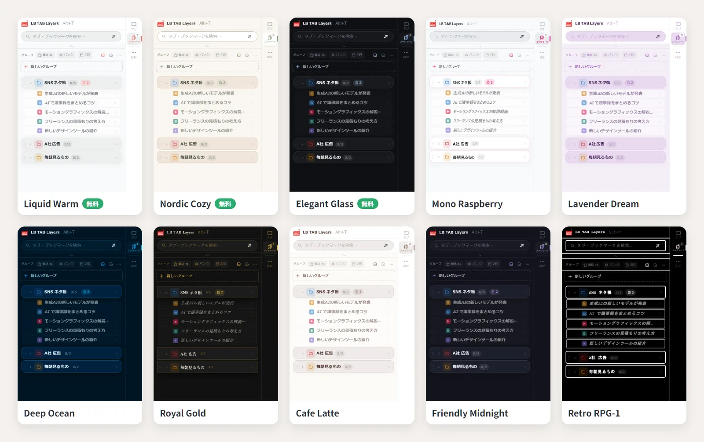
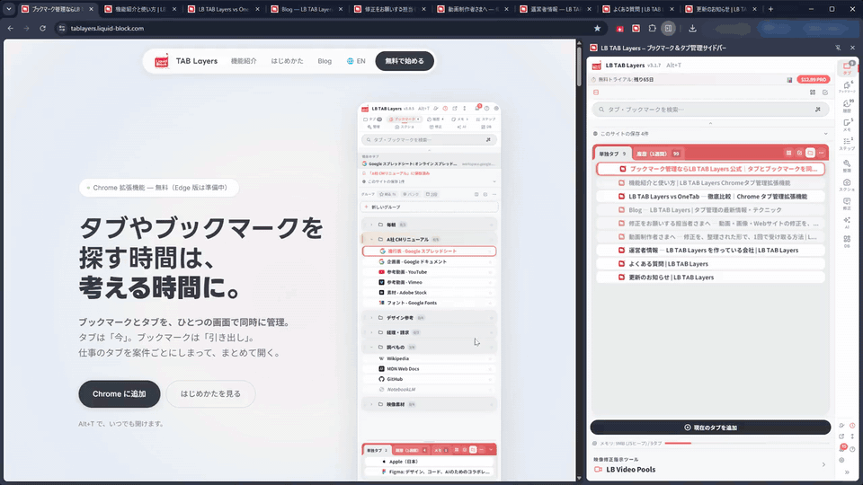
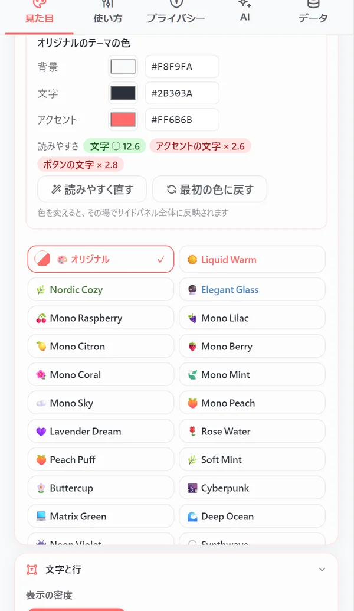

LB TAB Layers のテーマは、設定の「見た目」→「テーマ」で変えられます。全40種類あり、無料版では「Liquid Warm」「Nordic Cozy」「Elegant Glass」の3種類が使えます。PRO と、入れてから30日のお試し中は、40種類すべてを選べます。背景・文字・アクセントの3色を選んで、自分だけの配色（オリジナルのテーマ）も作れます。
タブ管理のサイドパネルは、仕事中ずっと画面の端に見えているものです。だからこそ、見ていて疲れない色、気分が上がる色を選ぶ価値があります。
LB TAB Layers には、全40種類のテーマがあります。記事のいちばん上の画像は、同じ画面を 40 種のうちの 10 種で並べたものです。「無料」の印の 3 種は、無料版でも使えます。
テーマの変え方
設定を開く
サイドパネルの歯車のボタンで、設定を開きます。
「見た目」→「テーマ」を開く
「見た目」のタブにある「テーマ」の段を押して開きます。
好きなテーマを押す
押すと、その場で見た目が切り替わります。選んだテーマは、ダッシュボードなどの画面にも反映されます。テーマはいつでも変えられるので、1日使ってみて、目が疲れないかどうかで決めるのがおすすめです。

全40種類のテーマ
| 系統 | テーマ |
|---|---|
| 定番（無料版で利用可） | Liquid Warm／Nordic Cozy／Elegant Glass |
| モノトーン＋差し色（8種） | Mono Raspberry／Mono Lilac／Mono Citron／Mono Berry／Mono Coral／Mono Mint／Mono Sky／Mono Peach |
| パステル（5種） | Lavender Dream／Rose Water／Peach Puff／Soft Mint／Buttercup |
| ダーク（5種） | Cyberpunk／Matrix Green／Deep Ocean／Neon Violet／Synthwave |
| ラグジュアリー（5種） | Royal Gold／Velvet Wine／Emerald City／Platinum Pearl／Obsidian |
| やわらか・カジュアル（7種） | Pop Toy Blocks／Friendly Midnight／Cafe Latte／Forest Mint／Sweet Peach／Soft Navy／Sunny Apricot |
| レトロ・ポップ（4種） | Retro RPG-1／Retro RPG-2／Wild Quest／Cartoon Pop |
| SF（3種） | SciFi Mecha-1／SciFi Mecha-2／SciFi Mecha-3 |
3 色で、自分の配色を作る（オリジナルのテーマ）
40種類の中にぴったりの色がないときは、オリジナルのテーマで、自分の配色を作れます。テーマの一覧のいちばん上にある「オリジナル」を押すと、色を選ぶ欄が開きます。
- 選ぶのは 3 色だけ：背景・文字・アクセント。ほかの細かい色（枠や、選んだときの色など）は、3 色から自動で作ります
- 明るい・暗いも自動：背景の明るさで、明るいテーマか暗いテーマかが決まります
- 読みやすさをその場で確かめる：文字やボタンの文字が背景に対して読みやすいかを、○と×で出します。読みにくいときは「読みやすく直す」で、色を少しずつ寄せて直せます
- いつでも戻せる：「最初の色に戻す」で、はじめの色に戻ります

会社のロゴの色に合わせる、目に優しい色に落ち着かせる、といった使い方ができます。オリジナルのテーマは PRO の機能です（入れてから30日のお試し中は使えます）。
テーマのほかにも、色で分けられるもの
| どこ | 選べる色 | 使い方 |
|---|---|---|
| グループ | 8 色（アイコンは 25 種） | 仕事ごとに色を分ける。▶ で開くと、Chrome のタブグループも同じ色になります |
| メモ | 8 色 | 「今週の分」「いつか」のように、メモを色で分ける |
グループの色分けのしかたは「タブを色分けして見分けやすくする」に書いています。
用途別の選び方
- 長時間の作業・夜の作業 — ダーク系や Friendly Midnight。画面全体が暗い Web サービス（動画編集ツールやコードエディタ）と並べても浮きません
- 資料作りや事務作業 — Liquid Warm や Nordic Cozy など、落ち着いた明るい系。白いドキュメントとなじみます
- グループの色を目立たせたい — モノトーン系。背景が控えめなので、グループごとの色分けがはっきり見えます
- 気分転換に — レトロ・ポップ系や SF 系。月曜の朝だけ変える、という使い方も
- 会社や作品の色に合わせたい — オリジナルのテーマ。背景・文字・アクセントの 3 色を選ぶだけです
ℹ️ 無料版で PRO のテーマを選ぶと、アップグレードの案内が出ます。入れてから30日のお試し中は、40種類すべてのテーマと、オリジナルのテーマを使えます。
よくある質問
Q. LB TAB Layersのテーマはどこで変えられますか？
設定の「見た目」→「テーマ」で変えられます。一覧からテーマを押すと、その場で見た目が切り替わります。
Q. 無料版で使えるテーマはどれですか？
無料版では「Liquid Warm」「Nordic Cozy」「Elegant Glass」の3種類が使えます。PRO と、入れてから30日のお試し中は、全40種類とオリジナルのテーマを選べます。
Q. ダークモードのテーマはありますか？
はい。Cyberpunk、Matrix Green、Deep Ocean、Neon Violet、Synthwave のダーク系5種類のほか、Friendly Midnight や Obsidian など暗めの配色のテーマがあります。オリジナルのテーマで暗い背景を選ぶと、暗いテーマになります。
Q. 自分で色を決められますか？
できます。テーマの一覧のいちばん上の「オリジナル」で、背景・文字・アクセントの3色を選ぶと、自分の配色になります。読みやすさもその場で確かめられます（PRO の機能）。
▶ 実際の操作を動画で見る
サイドバーで、ブックマークとタブをいっしょに管理する様子です。